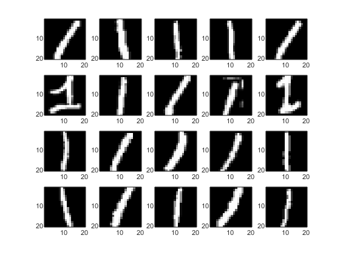
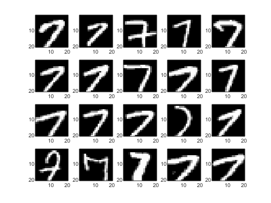
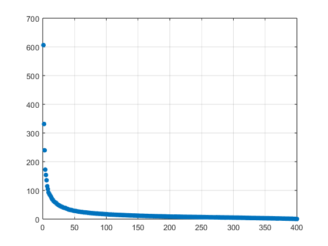
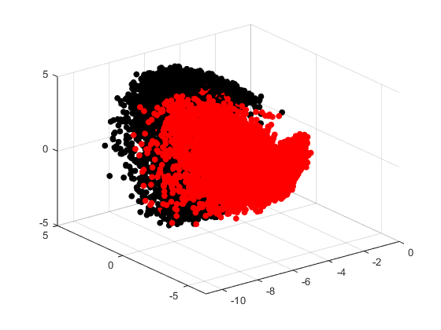
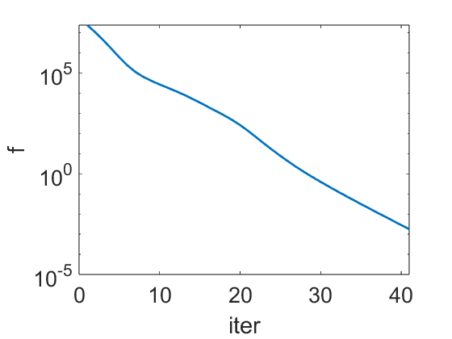
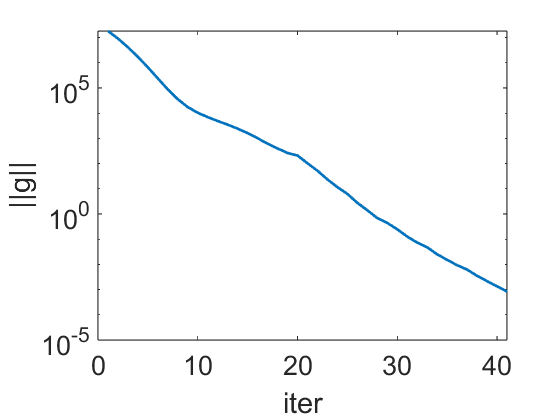

Contents
function mnist_2categories_quadratic_NLLS()
close all
fsz = 20;
mdata = load('mnist.mat');
imgs_train = mdata.imgs_train;
imgs_test = mdata.imgs_test;
labels_test = mdata.labels_test;
labels_train = mdata.labels_train;
find 1 and 7 in training data
ind1 = find(double(labels_train)==2);
ind2 = find(double(labels_train)==8);
n1train = length(ind1);
n2train = length(ind2);
fprintf("There are %d 1's and %d 7's in training data\n",n1train,n2train);
train1 = imgs_train(:,:,ind1);
train2 = imgs_train(:,:,ind2);
There are 6742 1's and 6265 7's in training data
find 1 and 7 in test data
itest1 = find(double(labels_test)==2);
itest2 = find(double(labels_test)==8);
n1test = length(itest1);
n2test = length(itest2);
fprintf("There are %d 1's and %d 7's in test data\n",n1test,n2test);
test1 = imgs_test(:,:,itest1);
test2 = imgs_test(:,:,itest2);
There are 1135 1's and 1028 7's in test data
plot some data from category 1
figure; colormap gray
for j = 1:20
subplot(4,5,j);
imagesc(train1(:,:,j));
end

plot some data from category 2
figure; colormap gray
for j = 1:20
subplot(4,5,j);
imagesc(train2(:,:,j));
end

use PCA to reduce dimensionality of the problem to 20
[d1,d2,~] = size(train1);
X1 = zeros(n1train,d1*d2);
X2 = zeros(n2train,d1*d2);
for j = 1 : n1train
aux = train1(:,:,j);
X1(j,:) = aux(:)';
end
for j = 1 :n2train
aux = train2(:,:,j);
X2(j,:) = aux(:)';
end
X = [X1;X2];
D1 = 1:n1train;
D2 = n1train+1:n1train+n2train;
[U,Sigma,~] = svd(X','econ');
esort = diag(Sigma);
figure;
plot(esort,'.','Markersize',20);
grid;
nPCA = 20;
Xpca = X*U(:,1:nPCA);
figPCA = figure;
hold on; grid;
plot3(Xpca(D1,1),Xpca(D1,2),Xpca(D1,3),'.','Markersize',20,'color','k');
plot3(Xpca(D2,1),Xpca(D2,2),Xpca(D2,3),'.','Markersize',20,'color','r');
view(3)
 
split the data to training set and test set
Xtrain = Xpca;
Ntrain = n1train + n2train;
Xtest1 = zeros(n1test,d1*d2);
Xtest = zeros(n2test,d1*d2);
for j = 1 : n1test
aux = test1(:,:,j);
Xtest1(j,:) = aux(:)';
end
for j = 1 :n2test
aux = test2(:,:,j);
Xtest2(j,:) = aux(:)';
end
Xtest = [Xtest1;Xtest2]*U(:,1:nPCA);
Ntest = n1test+n2test;
testlabel = ones(Ntest,1);
testlabel(n1test+1:Ntest) = -1;
category 1 (1): label 1; category 2 (7): label -1
label = ones(Ntrain,1);
label(n1train+1:Ntrain) = -1;
dividing quadratic surface
optimize w and b
d = nPCA;
r_and_J = @(w)Res_and_Jac(Xtrain,label,w);
funCall = @(w)fun0(Xtrain,label,w);
w = ones(d^2+d+1,1);
bsz = ceil(Ntrain/10);
kmax = 6e2;
tol = 1e-3;
[w,f,gnorm] = LevenbergMarquardt(r_and_J,funCall,w,kmax,tol);
figure;
plot(f,'Linewidth',2);
xlabel('iter','fontsize',fsz);
ylabel('f','fontsize',fsz);
set(gca,'fontsize',fsz,'Yscale','log');
figure;
plot(gnorm,'Linewidth',2);
xlabel('iter','fontsize',fsz);
ylabel('||g||','fontsize',fsz);
set(gca,'fontsize',fsz,'Yscale','log');
 
apply the results to the test set
test = myquadratic(Xtest,testlabel,w);
hits = find(test > 0);
misses = find(test < 0);
nhits = length(hits);
nmisses = length(misses);
fprintf('n_correct = %d, n_wrong = %d, accuracy %d percent\n',nhits,nmisses,nhits/Ntest);
n_correct = 2152, n_wrong = 11, accuracy 9.949145e-01 percent
plot the dividing surface if nPCA = 3
if d == 3
d2 = d^2;
W = reshape(w(1:d2),[d,d]);
v = w(d2+1:d2+d);
b = w(end);
xmin = min(Xtrain(:,1)); xmax = max(Xtrain(:,1));
ymin = min(Xtrain(:,2)); ymax = max(Xtrain(:,2));
zmin = min(Xtrain(:,3)); zmax = max(Xtrain(:,3));
nn = 50;
figure(figPCA);
[xx,yy,zz] = meshgrid(linspace(xmin,xmax,nn),linspace(ymin,ymax,nn),...
linspace(zmin,zmax,nn));
qsurf = W(1,1)*xx.^2+W(2,2)*yy.^2+W(3,3)*zz.^2+(W(1,2)+W(2,1))*xx.*yy...
+(W(1,3)+W(3,1))*xx.*zz++(W(2,3)+W(3,2))*yy.*zz...
+v(1)*xx+v(2)*yy+v(3)*zz+b;
p = patch(isosurface(xx,yy,zz,qsurf,0));
p.FaceColor = 'cyan';
p.EdgeColor = 'none';
camlight
lighting gouraud
alpha(0.3);
end
end
function f = fun0(X,y,w)
f = 0.5*sum((log(1 + exp(-myquadratic(X,y,w)))).^2);
end
function [r,J] = Res_and_Jac(X,y,w)
aux = exp(-myquadratic(X,y,w));
r = log(1 + aux);
a = -aux./(1+aux);
[n,d] = size(X);
d2 = d^2;
ya = y.*a;
qterm = zeros(n,d2);
for k = 1 : n
xk = X(k,:);
xx = xk'*xk;
qterm(k,:) = xx(:)';
end
Y = [qterm,X,ones(n,1)];
J = (ya*ones(1,d2+d+1)).*Y;
end
function q = myquadratic(X,y,w)
d = size(X,2);
d2 = d^2;
W = reshape(w(1:d2),[d,d]);
v = w(d2+1:d2+d);
b = w(end);
qterm = diag(X*W*X');
q = y.*qterm + ((y*ones(1,d)).*X)*v + y*b;
end
function [w,fvals,gnorm] = LevenbergMarquardt(r_and_J,funCall,w,kmax,tol)
Delta = 0.5;
Delta_max = 1.0;
Delta_min = 1e-14;
k = 1;
rho_bad = 0.25;
rho_good = 0.75;
eta = 0.1;
[r,J] = r_and_J(w);
f = funCall(w);
g = J'*r;
norm_g = norm(g);
[~,Jd2] = size(J);
while k <= kmax
if norm(g) < tol
break
end
B = J'*J + 1e-6*eye(Jd2);
pstar = -B\g;
if norm(pstar) <= Delta
p = pstar;
else
lam = 1;
while 1
B1 = B + lam*eye(Jd2);
C = chol(B1);
p = -C\(C'\g);
nw = norm(p);
dd = abs(nw - Delta);
if dd < 1e-6
break
end
q = C'\p;
nq = norm(q);
lamnew = lam + (nw/nq)^2*(nw-Delta)/Delta;
if lamnew < 0
lam = 0.5*lam;
else
lam = lamnew;
end
end
end
wnew = w + p;
fnew = funCall(wnew);
[rnew, Jnew] = r_and_J(wnew);
gnew = Jnew'*rnew;
mnew = f + g'*p + 0.5*p'*B*p;
rho = (f - fnew + 1e-14)/(f - mnew + 1e-14);
if rho < rho_bad
Delta = max([0.25*Delta, Delta_min]);
else
if rho > rho_good
Delta = min([Delta_max,2*Delta]);
end
end
if rho > eta
w = wnew;
f = fnew;
g = gnew;
r = rnew;
J = Jnew;
norm_g = norm(g);
fprintf('Accept: iter # %d: f = %.4e, |g| = %.4e, rho = %.4e, Delta = %.4e\n',k,f,norm_g,rho,Delta);
else
fprintf('Reject: iter # %d: f = %.4e, |df| = %.4e, rho = %.4e, Delta = %.4e\n',iter,f,norm_g,rho,Delta);
end
fvals(k) = f;
gnorm(k) = norm_g;
k = k + 1;
end
end